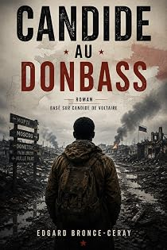

Voltaire's Candide projected into the contemporary Donbass
by Edgard Bronce-Ceraypar Edgard Bronce-Ceray
The bookLe livre
Moussa Diallo a vingt-trois ans, un français correct et un smartphone à l'écran fendu. On lui a appris que le compound de son oncle était le meilleur des mondes possibles, et que tous ses malheurs venaient de France. De Mopti au Donbass, il va vérifier. Le conte de Voltaire remonté pièce par pièce sur les routes migratoires et les fronts d'aujourd'hui — même candeur, mêmes horreurs, même question finale. Sauf que le jardin qu'il faudrait cultiver est un champ de mines.
Moussa Diallo a vingt-trois ans, un français correct et un smartphone à l'écran fendu. On lui a appris que le compound de son oncle était le meilleur des mondes possibles, et que tous ses malheurs venaient de France. De Mopti au Donbass, il va vérifier. Le conte de Voltaire remonté pièce par pièce sur les routes migratoires et les fronts d'aujourd'hui — même candeur, mêmes horreurs, même question finale. Sauf que le jardin qu'il faudrait cultiver est un champ de mines.
From the opening pagesLes premières pages
✦ ✦ ✦
Comment Moussa fut élevé dans le plus beau des compounds, et comment il apprit que tous ses malheurs venaient de France
Il y avait, dans la région de Mopti, au cœur du Mali, un compound que ses habitants tenaient pour le plus agréable de la terre. L'oncle Amadou y régnait avec la majesté tranquille d'un homme qui possède trois chèvres, un toit de tôle, et la certitude que Dieu l'avait favorisé. Un manguier fournissait de l'ombre à quatorze personnes, ce qui était suffisant pourvu qu'on se serrât. Les murs de banco se fissuraient chaque saison des pluies, mais on les réparait chaque saison sèche, et cette régularité passait pour de la prospérité.
Moussa Diallo, neveu d'Amadou, avait vingt-trois ans, un visage ouvert, un français correct, et un smartphone dont l'écran était fendu en étoile mais qui fonctionnait encore, ce qui faisait de lui un homme connecté au monde. Il avait perdu son père dans un conflit intercommunautaire dont personne ne pouvait expliquer clairement l'origine, mais dont tout le monde s'accordait à dire qu'il avait été causé par la France. Sa mère était morte peu après, de chagrin selon les femmes, de paludisme selon le dispensaire, et de la France selon le Professeur Traoré.
Le Professeur Issa Traoré était l'homme le plus savant du canton. Il avait étudié à l'université de Bamako, lu Frantz Fanon dans le texte, et possédait un exemplaire de Les Damnés de la terre dont la couverture était si usée qu'on ne lisait plus que Les Damnés, ce qui lui semblait un résumé suffisant. Il enseignait à qui voulait l'entendre, et à qui ne le voulait pas, que la source de tous les maux du Mali, du Sahel, de l'Afrique et possiblement de l'humanité entière était la République française.
« La colonisation, disait-il en agitant son index avec l'autorité d'un homme qui a raison, nous a volé nos terres, notre or, nos langues. La Françafrique nous a volé nos gouvernements. Le franc CFA nous vole notre monnaie. Barkhane nous a volé notre souveraineté. Quand un homme vous vole tout et revient chaque matin vous expliquer que c'est pour votre bien, il ne faut pas s'étonner qu'on finisse par changer la serrure. »
Moussa trouvait ces raisonnements admirables. Il les trouvait d'autant plus admirables qu'il ne comprenait pas toujours le mot « souveraineté », mais il comprenait très bien le mot « voler », et cela lui suffisait.
Aïssata, sa femme, était la fille d'un cultivateur du village voisin. Elle avait dix-neuf ans, un enfant de deux ans, et cette forme de sagesse pratique qui consiste à ne pas écouter les discours des hommes tout en ayant l'air de les approuver. Quand le Professeur Traoré expliquait que la Russie allait libérer l'Afrique, Aïssata hochait la tête et continuait de piler le mil, car le mil ne se pile pas tout seul, quelle que soit la puissance libératrice.
L'oncle Amadou, pour sa part, se tenait à égale distance de la politique et du travail, ce qui lui laissait beaucoup de temps pour le thé. Il considérait que son compound était un paradis, que la volonté de Dieu était impénétrable, et que le Professeur Traoré parlait trop mais n'avait pas entièrement tort, puisque les Français avaient effectivement cessé de construire des routes depuis l'indépendance, et que les routes, elles, n'avaient pas cessé de se dégrader.
Tout était donc au mieux dans le plus modeste des compounds. Le manguier donnait des mangues. Les chèvres donnaient du lait. Le Professeur donnait des certitudes. Et Moussa, assis sous l'arbre, regardait sur son téléphone fissuré des vidéos de Russia Today sous-titrées en français, où des hommes en costume expliquaient que l'Afrique était l'avenir du monde, que la France était finie, et que la Russie était l'amie des peuples opprimés. Il trouvait ces vidéos très convaincantes, car elles confirmaient exactement ce que le Professeur avait dit, ce qui est toujours la marque d'une vérité profonde, ou d'un algorithme bien réglé.
✦
✦ ✦ ✦
Comment Moussa fut recruté par un homme charmant, et comment il signa un document qu'il ne pouvait pas lire, ce qui lui parut parfaitement normal
Un jour que Moussa était assis sous le manguier, occupé à regarder une vidéo dans laquelle un général africain expliquait que l'Afrique n'avait plus besoin de l'Occident, son téléphone vibra. Un message apparut sur WhatsApp, envoyé par un numéro inconnu portant l'indicatif +7, que Moussa n'avait jamais vu et qui était celui de la Russie, ce qu'il ignorait, n'ayant jamais eu de raison d'appeler la Russie.
Le message disait ceci :
« Frère africain, travail bien payé en Russie. 1 500 dollars par mois. Logement et nourriture fournis. Surveillance d'entrepôts. Contrat 6 mois. Répondez OUI si intéressé. »
Moussa considéra qu'un message qui vous appelle « frère » ne pouvait pas être envoyé par un ennemi. Il répondit OUI.
Trois jours plus tard, un homme se présenta au village dans un 4×4 Toyota blanc dont la propreté, au milieu de la poussière de Mopti, tenait du miracle ou du budget conséquent. Il dit s'appeler M. Kouri. Il avait un visage rond, une poignée de main vigoureuse, un polo à col bien repassé et un français excellent quoique légèrement étrange, comme celui d'un homme qui aurait appris la langue dans des manuels soviétiques des années quatre-vingt et l'aurait complétée avec des séries télévisées ivoiriennes.
M. Kouri s'assit sous le manguier, accepta le thé de l'oncle Amadou avec la déférence d'un homme qui connaît les usages, et expliqua sa proposition. La Russie avait besoin de jeunes hommes courageux et travailleurs pour surveiller des entrepôts de matériel logistique. Le salaire était de mille cinq cents dollars par mois, ce qui représentait, au cours du jour, plus d'argent que Moussa n'en avait vu dans toute sa vie, dans la vie de son père, et probablement dans la vie de son grand-père, à supposer qu'on additionnât les trois.
– Et le logement ? demanda l'oncle Amadou, qui avait le sens pratique des hommes qui n'ont jamais voyagé.
– Fourni, dit M. Kouri. Chauffé en hiver.
Le mot « chauffé » n'évoquait rien de particulier à l'oncle Amadou, qui n'avait jamais eu froid de sa vie, mais il hocha la tête comme si cette précision le rassurait beaucoup.
– Et la nourriture ? demanda Aïssata, qui avait cessé de piler le mil.
– Trois repas par jour, dit M. Kouri avec un sourire de diplomate. Copieux.
Le Professeur Traoré, qui avait été convoqué pour l'occasion car on ne prend pas de décision importante sans un intellectuel, arriva avec son exemplaire de Fanon sous le bras comme un prêtre porte sa bible. Il examina M. Kouri, lui posa trois questions sur la géopolitique du Sahel auxquelles M. Kouri répondit exactement ce que le Professeur voulait entendre, à savoir que la Russie respectait la souveraineté africaine, que la France était une puissance déclinante et prédatrice, et que l'avenir de la coopération Sud-Sud passait par Moscou, et déclara que cette proposition était excellente.
– Tout plutôt que travailler pour les Français, dit le Professeur. La Russie n'a jamais colonisé l'Afrique.
Ce raisonnement parut lumineux à tout le monde. Que la Russie n'eût jamais colonisé l'Afrique prouvait qu'elle ne le ferait jamais, de même qu'un homme qui n'a jamais volé ne volera jamais, ce qui est une déduction rassurante quoique historiquement fragile.
The excerpt ends here — about 1,219 words of the published edition.L'extrait s'arrête ici — environ 1,219 mots de l’édition parue.
KindlePaperbackBrochéContextContexte
The one programme that is not translation. A sustained project of transposition: the monuments of French literature carried, one by one, into the present — not modernised paraphrase but the moral machinery of a great book rebuilt in a landscape its author never saw.
Le seul programme qui ne relève pas de la traduction. Un travail suivi de transposition : les monuments de la littérature française transportés un à un dans le présent — non pas une paraphrase modernisée, mais la mécanique morale d'un grand livre remontée dans un paysage que son auteur n'a jamais vu.
The whole programmeTout le programme